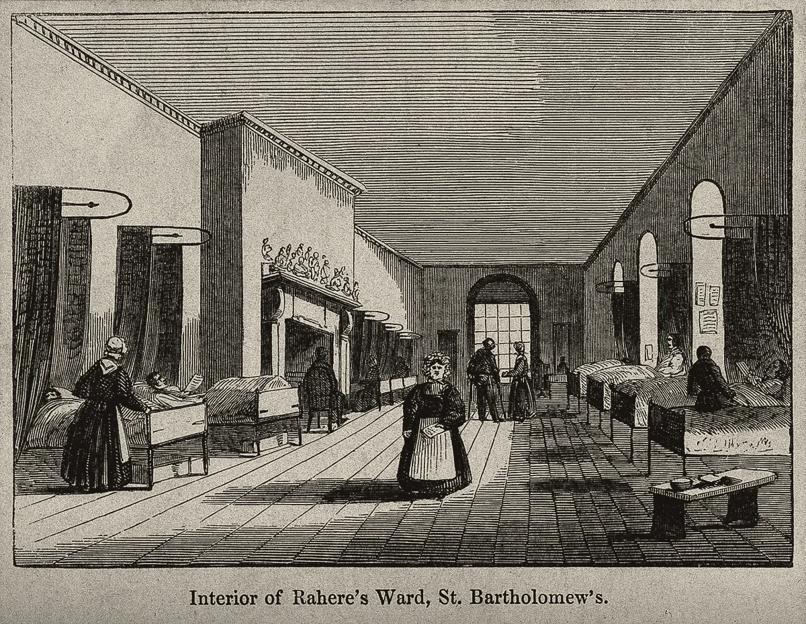

· Edición 58 · 4 min de lectura
En 2050, las bacterias resistentes matarían 1,9 millones de personas al año

En 2050, las bacterias resistentes matarían 1,9 millones de personas al año
Ver todo el tema, de principio a fin →
En pocas palabras. Las bacterias que ya no responden a los antibióticos mataron directamente a 1,14 millones de personas en 2021, y The Lancet proyecta 1,91 millones al año en 2050, casi dos de cada tres mayores de 70. En Colombia, una de cada cuatro Klebsiella de las UCI de adultos ya resiste los antibióticos de reserva, y la fórmula para comprarlos se exige desde 2005: en 2025 el Congreso tuvo que ordenarlo otra vez. Usar menos y mejor funciona, como en Suecia, y empieza en casa: no comprarlos sin fórmula.
El dato curioso. El 11 de diciembre de 1945, en su discurso del Nobel, Alexander Fleming advirtió que llegaría el día en que cualquiera compraría penicilina en una tienda. Alguien tomaría muy poca: no lo bastante para matar a los microbios, sí para enseñarles a resistir. Su ejemplo: el señor X se automedica un dolor de garganta y contagia a su esposa, a quien la penicilina ya no le sirve. Moraleja: si usa penicilina, use suficiente.
Qué está cambiando. El 30 de octubre, el investigador Alistair Thorpe, de la Universidad de Utah, publicó una encuesta: de 959 adultos de Estados Unidos, 268 admitieron haber exagerado o inventado síntomas para que les recetaran un antibiótico.
Lo más fingido fueron síntomas de resfriado, que causa un virus, y contra los virus el antibiótico no sirve (Conocimiento general.): mintieron por un remedio que no cura lo que fingían tener.
Cada uso innecesario deja vivas a las bacterias que resisten. Según la OMS, en 2023 una de cada seis infecciones confirmadas ya resistía el tratamiento de siempre, y la resistencia subió entre 2018 y 2023 en más de 40 de cada 100 combinaciones vigiladas.
Lo que cambia en 10 a 50 años: morir de una infección común vuelve a ser más probable, sobre todo en la vejez. El estudio GRAM, en The Lancet, proyecta 39 millones de muertes atribuibles entre 2025 y 2050.
Fuente: Naghavi y otros, The Lancet, 2024 (estudio GRAM)
Ver datos
| millones | |
|---|---|
| 1990 | 1,06 |
| 2021 | 1,14 |
| 2050 | 1,91 |
Entre 1990 y 2021, esas muertes bajaron 60% en menores de 5 años y subieron 90% en mayores de 70: un mundo que envejece es más vulnerable.
Por qué.
- Uso de más. Cada dosis innecesaria es un entrenamiento gratis para las bacterias.
- Pocos remedios nuevos. Un antibiótico nuevo se guarda para casos extremos, así que vende poco. (Conocimiento general.)
Qué significa para Colombia.
- Las UCI. En 2025, 25 de cada 100 Klebsiella de UCI de adultos resistieron los carbapenémicos, y 43 de cada 100 estafilococos, la oxacilina, según el Instituto Nacional de Salud.
- La droguería. El Decreto 2200 de 2005 exige fórmula. En 2011, en compras simuladas, 80 de cada 100 droguerías de Bogotá vendieron antibióticos sin ella.
- La ley nueva. La Ley 2506 de 2025 repite la exigencia, ahora con firma legible, y prohíbe anunciarlos.
Quién se está preparando. Suecia creó en 1995 Strama, una red nacional de médicos y laboratorios. Entre 1992 y 2016, las recetas ambulatorias por habitante bajaron 43%, y 73% en menores de cinco años.
Chile exigió receta en 1999, el primero de la región: en un año, la venta de amoxicilina cayó 36%.
En septiembre salió la primera guía internacional para tratar infecciones resistentes con fagos, virus que atacan bacterias.
Pero ojo.
- El efecto se gasta. En Chile, algunas familias de antibióticos volvieron a crecer mucho hasta 2012, según una tesis universitaria.
- También falta. Según el estudio GRAM, mejor atención y más acceso a antibióticos podrían evitar 92 millones de muertes hasta 2050.
- Fagos. Sin ensayos grandes, siguen siendo un último recurso.
Qué hacer con esto
Para ir pensando. Ante una gripa, la pregunta útil para el médico es si la causa es una bacteria o un virus.
Cómo prepararse. Tomar el antibiótico como lo indicó el médico, sin guardar sobrantes ni compartirlos. (Conocimiento general.)
Ojo con el cuento. «Un antibiótico por si acaso.» Contra un virus no previene nada y sí entrena a las bacterias. (Conocimiento general.)
Dos lecturas
Las dos posturas sobre el tema, en su mejor versión
Control estricto en la droguería. Sin fórmula no hay venta, con inspecciones y sanciones reales. Chile y Suecia muestran que el consumo baja rápido cuando la regla se cumple.
Primero, llegar al médico. Donde una cita tarda semanas, la droguería es el único servicio cercano. Restringir sin dar acceso deja sin tratamiento a quien sí lo necesita.
Quién decide y cuándo
Quién decide. El Ministerio de Salud dirige el plan nacional contra la resistencia 2025-2030. El Invima y las secretarías de salud vigilan las droguerías.
Cuándo. No encontramos un trámite con fecha. La Semana Mundial sobre el tema va del 18 al 24 de noviembre.
Cómo participar. (Conocimiento general: una venta sin fórmula se puede reportar a la secretaría de salud local.)
La paradoja del día
Lo más absurdo de la edición, en dos líneas
Colombia exige fórmula para vender antibióticos desde 2005, y en 2025 el Congreso lo volvió a ordenar, ahora con firma legible. Las bacterias aprendieron a resistir sin que nadie se lo ordenara.
Para conversar
La pregunta. Si los antibióticos se gastan con el uso, como un pozo que comparte todo un pueblo, ¿quién debería decidir cuándo se usan?
Para leer más
Libros para seguir con el tema
The Drugs Don't Work: A Global Threat, de Sally C. Davies, Jonathan Grant y Mike Catchpole (Penguin, 2013). Un libro breve de quien era la jefa médica de Inglaterra, que explica por qué la resistencia se parece al cambio climático. En inglés.
The Perfect Predator, de Steffanie Strathdee y Thomas Patterson (Hachette Books, 2019). Una epidemióloga cuenta cómo salvó a su esposo de una bacteria resistente con terapia de fagos. En inglés.
¿Le interesa ver las fuentes?
Todos los documentos y datos que usamos
24 fuentes: 6 académicas, 7 oficiales, 2 de organizaciones, 6 de prensa, 3 de referencia.
- Prensa Contagion Live (1 de noviembre de 2026), sobre el estudio de Thorpe, Levy y Scherer en JAMA Network Open. Nearly 30% of US adults report misrepresenting symptoms to get antibiotics
- Organización University of Utah Health, en Newswise (octubre de 2026). One in Four Americans Have Exaggerated or Made Up Symptoms to Try to Get Antibiotics
- Prensa News-Medical (30 de octubre de 2026). More than one-quarter of Americans exaggerate symptoms to obtain antibiotics
- Académica Naghavi y otros (GRAM), The Lancet (septiembre de 2024), análisis sistemático con proyecciones, ficha del IHME. Global burden of bacterial antimicrobial resistance 1990–2021: a systematic analysis with forecasts to 2050
- Organización EurekAlert, con el estudio GRAM de The Lancet (septiembre de 2024). More than 39 million deaths from antibiotic-resistant infections estimated between now and 2050
- Prensa CIDRAP, Universidad de Minnesota (septiembre de 2024). Study forecasts more than 39 million deaths from antimicrobial resistance by 2050
- Oficial Organización Mundial de la Salud (13 de octubre de 2025), informe GLASS 2025. WHO warns of widespread resistance to common antibiotics worldwide
- Prensa Consultorsalud, con el protocolo de vigilancia del Instituto Nacional de Salud (septiembre de 2026). Resistencia bacteriana en Colombia: INS actualiza vigilancia hospitalaria y revela cifras de 2025
- Oficial Función Pública, Gestor Normativo. Ley 2506 de 2025 (28 de julio): investigación contra microorganismos multirresistentes y prevención de la resistencia antimicrobiana
- Oficial Congreso de la República, Gaceta del Congreso 384 de 2008. Proyecto de ley sobre la venta de antibióticos sin fórmula, con el artículo 19 del Decreto 2200 de 2005
- Académica Vacca, Niño y Reveiz, Revista Panamericana de Salud Pública (2011), estudio descriptivo con compras simuladas. Restricción de la venta de antibióticos en farmacias de Bogotá, Colombia: estudio descriptivo
- Oficial Organización Panamericana de la Salud (2020). La experiencia de Colombia en la fiscalización de la venta de antimicrobianos
- Prensa Consultorsalud (2025). Colombia actualiza su plan nacional contra la resistencia a los antimicrobianos y fortalece la respuesta del sistema de salud
- Académica Mölstad y otros, Boletín de la Organización Mundial de la Salud (2017). Lessons learnt during 20 years of the Swedish strategic programme against antibiotic resistance
- Académica Infection Control and Hospital Epidemiology, con el estudio de Bavestrello y otros (Revista Médica de Chile, 2002). Chile establishes law to control antibiotic use
- Académica Universidad de Chile, repositorio de tesis. Evaluación de las tendencias de consumo y ventas de antibióticos en Chile: 1998-2012
- Académica Würstle y otros, Nature Medicine (2026), guía de consenso. A consensus-based guideline for personalized bacteriophage therapy
- Prensa Medical Xpress (septiembre de 2026). First global guideline sets standards for the use of phages in hard-to-treat infections
- Oficial Centros para el Control y la Prevención de Enfermedades de Estados Unidos (CDC). Antimicrobial Resistance Threats Reports
- Oficial Organización Mundial de la Salud (25 de mayo de 2026). The World Health Assembly adopts updated Global Action Plan on Antimicrobial Resistance (2026–2036)
- Oficial Organización Mundial de la Salud. World AMR Awareness Week 2026 (18 al 24 de noviembre)
- Referencia Fundación Nobel. Alexander Fleming, Nobel Lecture: Penicillin (11 de diciembre de 1945)
- Referencia Penguin (ficha del libro). The Drugs Don't Work: A Global Threat, de Sally C. Davies, Jonathan Grant y Mike Catchpole (2013)
- Referencia Hachette (ficha del libro). The Perfect Predator, de Steffanie Strathdee y Thomas Patterson (2019)
Glosario
Las palabras técnicas, explicadas
- Antibiótico: medicamento que mata bacterias o frena su crecimiento. No sirve contra virus.
- Resistencia antimicrobiana: cuando bacterias, hongos o parásitos dejan de responder a los medicamentos que antes los controlaban.
- Muerte atribuible: la que no habría ocurrido si la infección no hubiera sido resistente.
- Carbapenémicos: antibióticos de reserva, que se usan cuando los demás fallan.
- Klebsiella: bacteria que causa neumonías e infecciones de la sangre y la orina, sobre todo en hospitales.
- Fagos: virus que solo infectan bacterias; cada uno ataca a unas pocas cepas.
- UCI: unidad de cuidados intensivos.
Nota metodológica
Cómo se hizo esta edición y qué no pudimos verificar
El horizonte. ¿Cambia el rumbo de cómo vive la gente, en Colombia o en el mundo, dentro de 10 a 50 años? Para la resistencia a los antibióticos, sí: decide si una infección común, una cirugía o un parto siguen siendo seguros para la próxima generación, y pesa más en un mundo que envejece. La evidencia es la serie de 1990 a 2021 y la proyección a 2050 del estudio GRAM, en The Lancet, más la serie de la OMS de 2018 a 2023.
Entra por la puerta del cambio de fondo: serie larga y proyección; un canal directo a Colombia (las UCI, las droguerías, la Ley 2506); y algo que se decide o se prepara ahora (la vigilancia de la venta y el uso en cada casa). La puerta de entrada es la encuesta publicada el 30 de octubre en JAMA Network Open; esa misma semana, el 28 de octubre, los CDC de Estados Unidos publicaron su informe de amenazas (9,7 millones de infecciones y 50.800 muertes al año allá). Ambos hechos son de hace siete a nueve días: no es la noticia del día, pero reactiva un tema que nunca habíamos tratado (revisamos el archivo: no hay ediciones sobre antibióticos).
La mezcla de la semana ya no manda. Esta es la cuarta edición de salud de la semana; la elegimos porque tiene el puntaje más alto, no por la mezcla. El desplazamiento por el clima quedó a un punto y sin hecho nuevo; con un empate, lo habríamos preferido por ser colombiano y por variar la semana. El marco mundial es el plan de acción 2026-2036 que adoptó la Asamblea Mundial de la Salud en mayo.
Puntaje. De 1 a 3 en cada criterio; peso en la vida y horizonte valen doble (máximo 24). Solo entra un tema con horizonte 3.
| Tema | Puerta | ¿Cambia el rumbo en 10 a 50 años? | Alcance | Peso | Horizonte | Cercanía | Margen | Mirada | Total | Resultado |
|---|---|---|---|---|---|---|---|---|---|---|
| Resistencia a los antibióticos (mundo y Colombia) | fondo | Sí: decide si las infecciones comunes siguen siendo tratables | 3 | 3 | 3 | 3 | 2 | 3 | 23 | Elegido (edición 58) |
| Desplazamiento por el clima en Colombia (Ley 2577) | fondo | Sí: quién tendrá que mudarse y con qué protección | 2 | 3 | 3 | 3 | 2 | 3 | 22 | Sin hecho nuevo esta semana |
| Capacidad solar en Colombia | fondo | Sí: la matriz eléctrica de las próximas décadas | 3 | 2 | 3 | 3 | 2 | 2 | 20 | Energía, contada el martes; cifras que no coinciden |
| Brecha de adaptación al clima (PNUMA) | fondo | Sí | 3 | 3 | 3 | 2 | 2 | 1 | 20 | Sin hecho nuevo; cerca de la COP31 |
| Seis acciones de clima y salud (OMS) | fondo | Sí | 3 | 3 | 3 | 2 | 2 | 1 | 20 | Sin hecho nuevo; cerca de calor y salud |
| Deforestación mínima en la Amazonía brasileña | avance | Sí | 3 | 2 | 3 | 2 | 2 | 2 | 19 | Dato del 16 de octubre |
| Emisiones de China | fondo | Sí | 3 | 2 | 3 | 2 | 1 | 2 | 18 | Sin hecho nuevo |
| Natalidad en Colombia | fondo | Sí | 3 | 2 | 3 | 3 | 1 | 1 | 18 | Sin dato nuevo desde septiembre |
| Glaciares de Colombia | fondo | Sí | 2 | 2 | 3 | 3 | 1 | 2 | 18 | Sin dato nuevo |
| El Niño muy fuerte y el hambre | fondo | No: es un episodio de uno o dos años | 3 | 3 | 2 | 3 | 2 | 1 | 19 | No pasa el horizonte |
| Previsión de inflación del Banco de la República | contexto | No: dato de coyuntura | 3 | 2 | 1 | 3 | 1 | 1 | 13 | No pasa el horizonte |
| Elecciones de mitad de período en Estados Unidos | contexto | No como transformación medible | 3 | 2 | 2 | 2 | 1 | 1 | 15 | No pasa el horizonte |
En el desplazamiento por el clima, el alcance vale 2 porque no hay una cifra confiable de cuántas personas se desplazan por el clima en Colombia (el Centro de Monitoreo del Desplazamiento Interno no la separa de la del conflicto). El margen vale 2 porque el plazo de seis meses para los criterios técnicos es nuestra cuenta desde la sanción, el 29 de mayo, y no una fecha oficial. El margen de la resistencia vale 2: no encontramos un trámite con fecha, aunque hay algo que cualquiera puede hacer. Ningún otro tema llega a 19 con un hecho nuevo y sin chocar con uno reciente, así que hoy hay una sola edición. Como no hay una decisión con fecha, la edición no lleva el recuadro de decisiones.
Hicimos unas 45 búsquedas en español, inglés y portugués. No pudimos abrir los documentos completos; trabajamos con resúmenes y resultados de búsqueda. De 24 fuentes, 18 no son de prensa.
Quedó sin verificar o con límites:
- Las cifras del Instituto Nacional de Salud (25,1% de Klebsiella resistente a carbapenémicos y 43% de estafilococos resistentes a oxacilina en UCI de adultos, 2025) las tomamos del resumen de Consultorsalud; no leímos el protocolo. Otras resistencias bajaron frente a 2024, como la de Acinetobacter.
- El dato de Bogotá es de 2011; no encontramos un estudio reciente con el mismo método.
- «Desde 2005» se refiere al Decreto 2200, que obliga a vender con fórmula los medicamentos que la exigen; lo tomamos de la Gaceta del Congreso y del estudio de 2011, que habla de una norma de cinco años.
- Los 1,06 millones de 1990 vienen de los comunicados sobre el estudio GRAM; los de 2021 y 2050, del resumen del estudio. Los porcentajes de menores de 5 y mayores de 70 están redondeados (59,8% y 89,7%).
- La caída de 36% en Chile compara octubre a diciembre de 1998 con el mismo periodo de 1999. El crecimiento de 1998 a 2012 (casi cuatro veces en las fluoroquinolonas) es de una tesis, no de un estudio revisado por pares.
- La encuesta de Utah se hizo en línea; los autores advierten que algunos pudieron no recordarlo o no admitirlo.
El grabado muestra una sala del hospital St Bartholomew's, en Londres: un grabado en madera de Edward Gilks a partir de un dibujo de William Alfred Delamotte, que conserva la Wellcome Collection y tomamos de Wikimedia Commons. Lo elegimos porque así eran los hospitales antes de los antibióticos. La ficha no trae fecha; «hacia 1847» es la de una serie de vistas del mismo hospital, de los mismos autores, en la misma colección. Lo bajamos al segundo intento; el primero lo frenó el límite de descargas de Commons.
Los libros: ninguno de los dos está en Santo & Seña (revisamos sus fichas en la tienda). Autores, años y editoriales los tomamos de las fichas de Penguin y de Hachette.